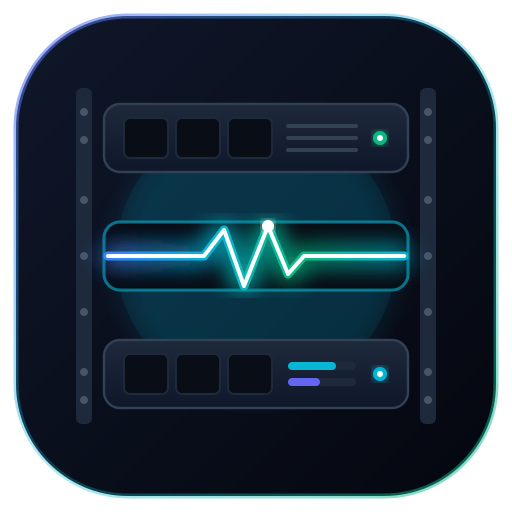
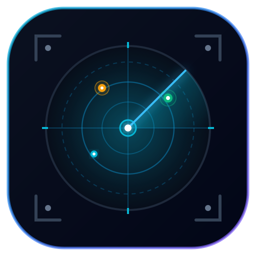
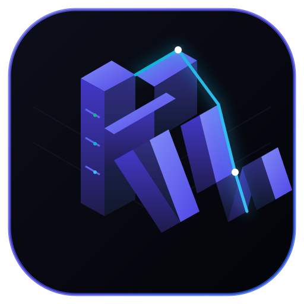
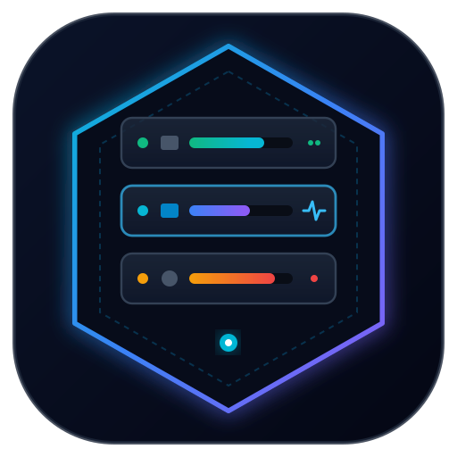

Concepto 01

The Pulse Stack
Chasis de servidor 1U en 3 niveles donde la unidad central se convierte en una onda de telemetría y pulso vital de salud en cian eléctrico.
Concepto 02

The Sentinel Lens
Vigilancia proactiva con lente de radar circular concéntrico, haz de escaneo y puntos de estado (verde, ámbar, cian) sobre rieles de rack.
Concepto 03

Monograma Isométrico "RW"
Estructura arquitectónica 3D que entrelaza las letras R y W formadas por módulos de servidores con facetas iluminadas en azul cobalto e índigo.
Concepto 04

Hex Sentinel
Prisma hexagonal estilo cloud-native con borde de vidrio esmerilado que aloja 3 servidores flotantes con barras de métricas (CPU, RAM, Disco).